当地时间8月4日，在巴黎奥运会游泳项目男子4×100米混合泳接力决赛中，由徐嘉余、覃海洋、孙佳俊、潘展乐组成的中国队打破美国40年垄断，夺得男子4×100米混合泳接力金牌 ！
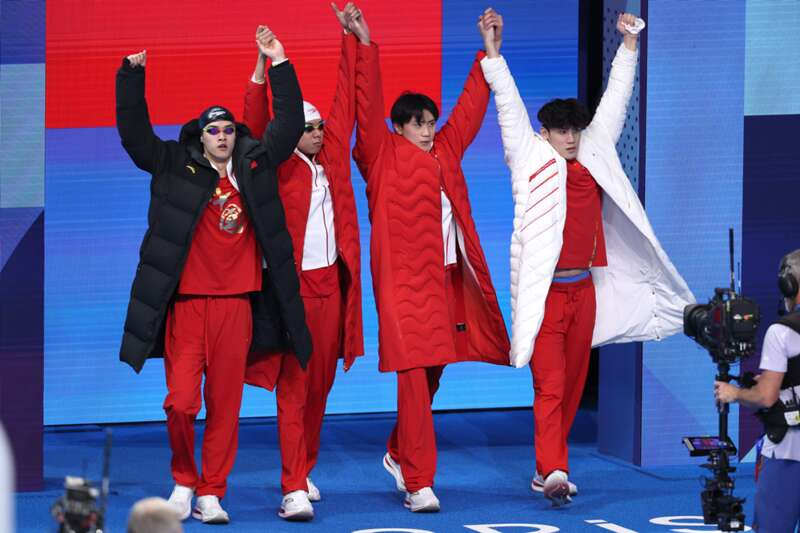
图源：中新社在一片庆贺声中，中国游泳健将们也抱着沉甸甸的奖牌完美“收官”。
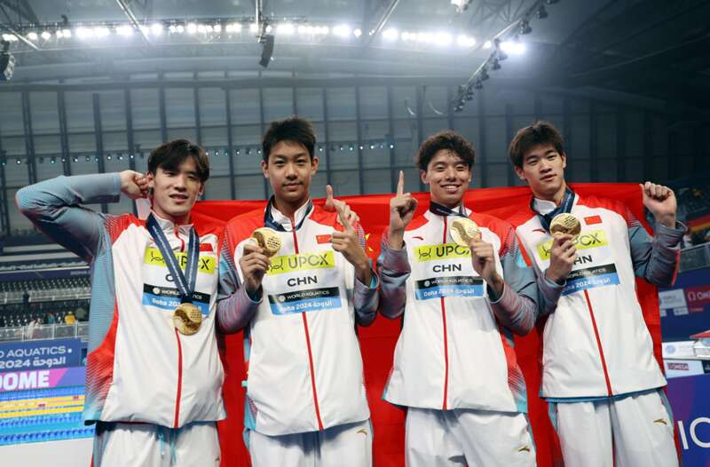
图源：新华社这些二十出头的年轻男孩，不仅用成绩证明了中国游泳运动的实力，青涩耿直的性格也非常讨喜。
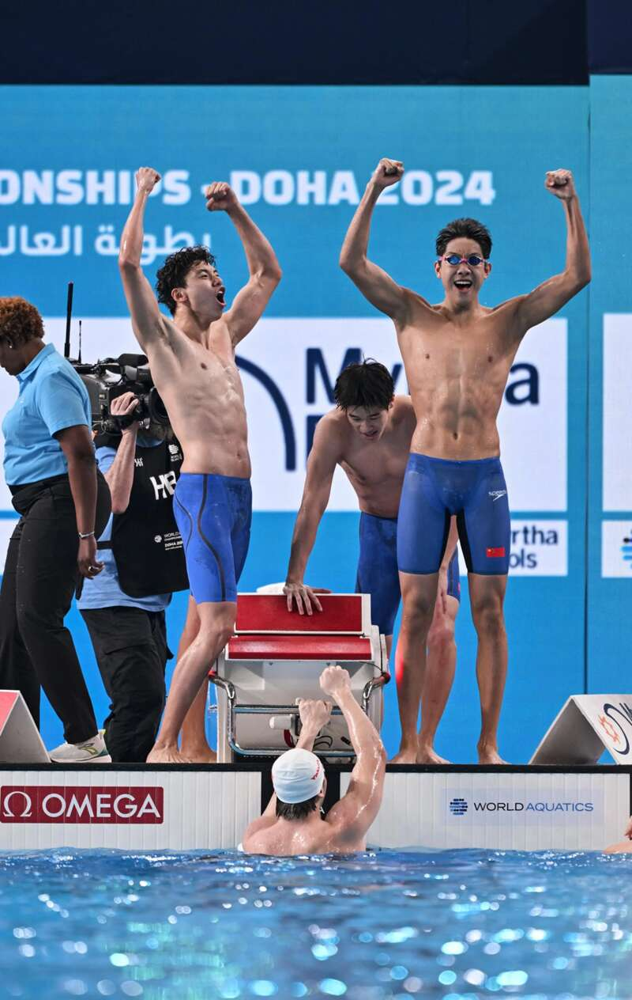
图源：新华社在今年奥运赛场上，享法妹也被刚刚打破世界纪录的男子100米自由泳冠军、“中国飞鱼”潘展乐原地圈粉。
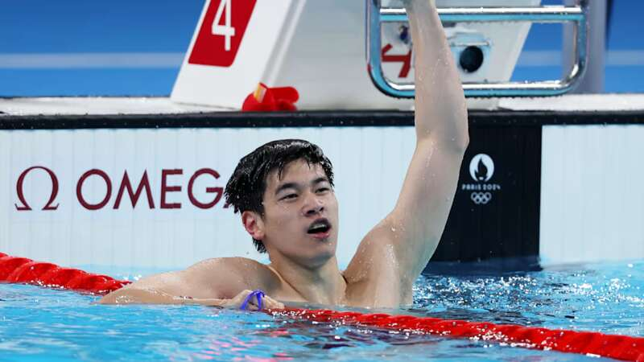
图源：paris2024这位刚满20周岁的大男孩在回答记者提问时更是“直言不讳”，被观众调侃为“采访的神”！
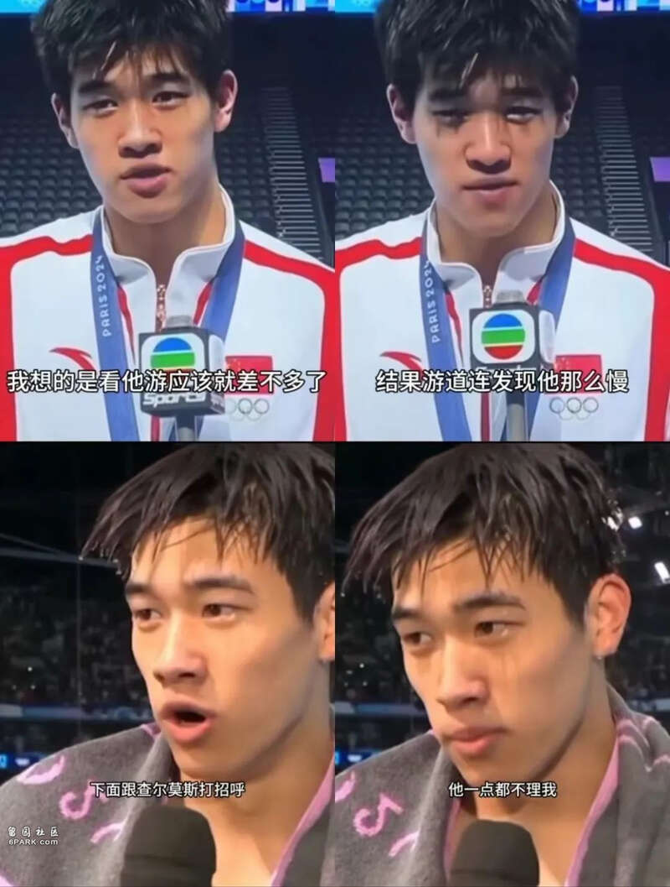
不仅是中国的运动员，那些泳池边的“超模”也直叫人流口水！身高1米9，标准8块腹肌，“双开门”大宽肩……这些散发着男性荷尔蒙的游泳运动员们，谁能不爱？
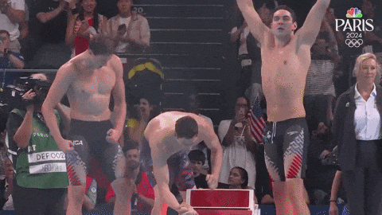
尤其是赛前的“亮相”环节，简直就像男模天团在泳池边走秀。
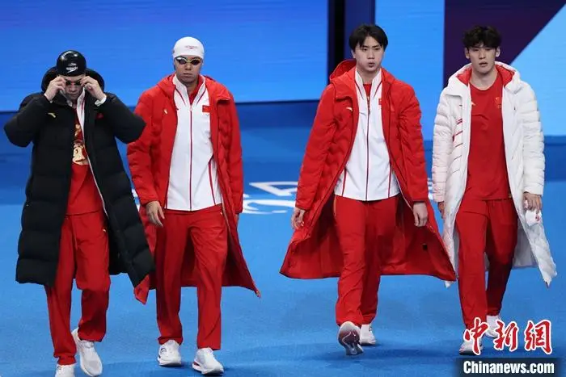
图源：中新网这幅绝美画面也让观众放出金句：南国生红豆，泳队出男模！打开社交媒体，享法妹也是被这些“泳池男模”的现场视频震惊到了。
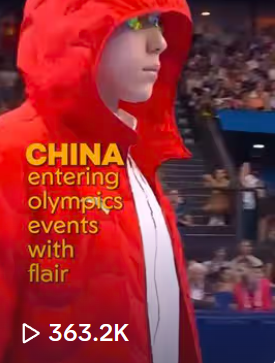
凭借宛如古希腊雕塑般的美貌👇
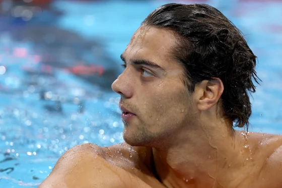
图源：Getty Images令人惊叹的马甲线👇
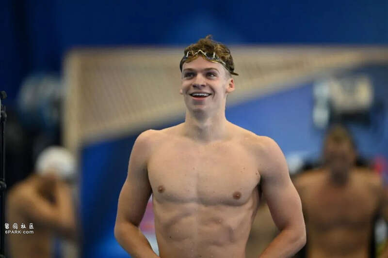
图源：Fabio Cetti当然，最亮眼的还是中国队的选手们，实力与颜值双双在线！👇
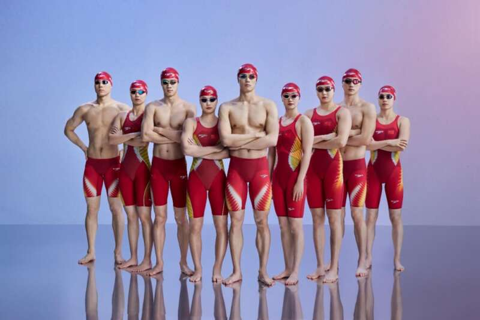
图源：X@CHNswim_fan人类高质量神颜，看来都扎堆在巴黎奥运会了~
正所谓“爱美之心人皆有之”，美国《人物》（People）杂志最近公布了一份“巴黎奥运会上最性感的男运动员”名单。
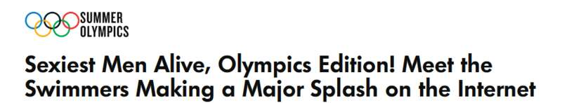
“歪果仁”的审美也和我们一样吗？相信大家也对这份“颜值超标”的名单感到好奇。接下来，让我们一起看看吧~
01
托马斯·切孔（Thomas Ceccon）
意大利
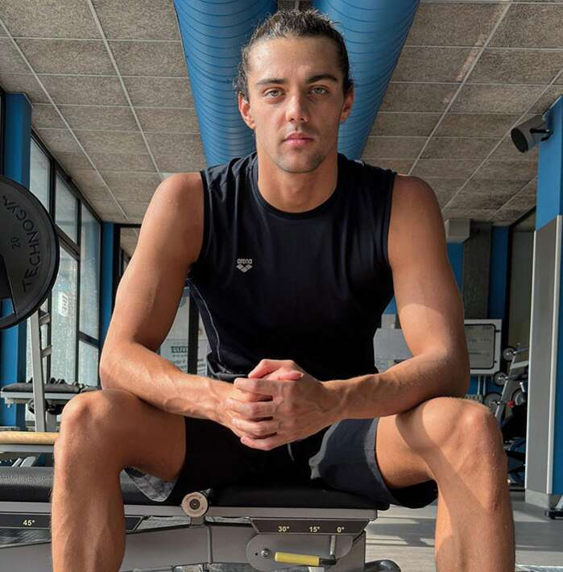
图源：Instagram@ceccon_thomas意大利队在男子4×100 米自由泳接力赛中获得铜牌后，23岁的托马斯·切孔成为网友关注的焦点。
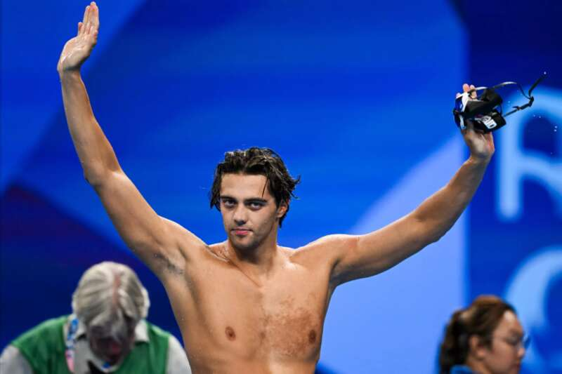
图源：Stephen McCarthy/Sportsfile via Getty如雕塑般精致的面容、结实的肌肉身材，在颁奖仪式上“不小心”露出的人鱼线更是硬控了整个社交网络！网友们纷纷不吝赞美：
“切孔和他的队友看起来像Calvin Klein模特！”
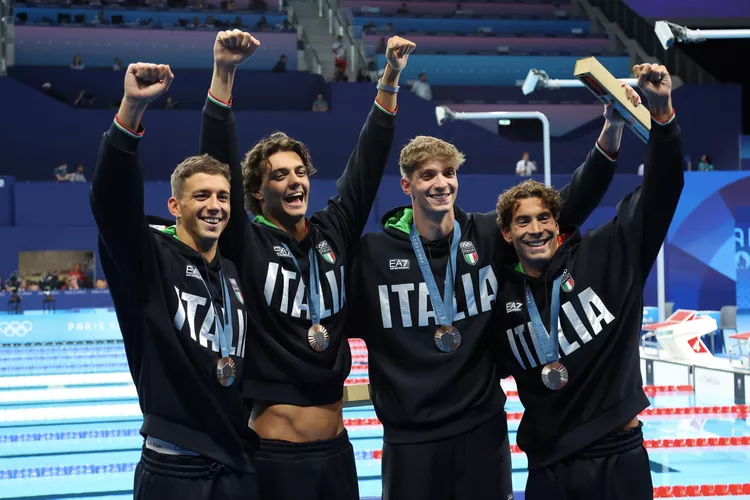
图源：Xavier Laine/Getty“我很少会被美色所打动。但是，意大利的游泳冠军托马斯·切孔却让我心动了。”
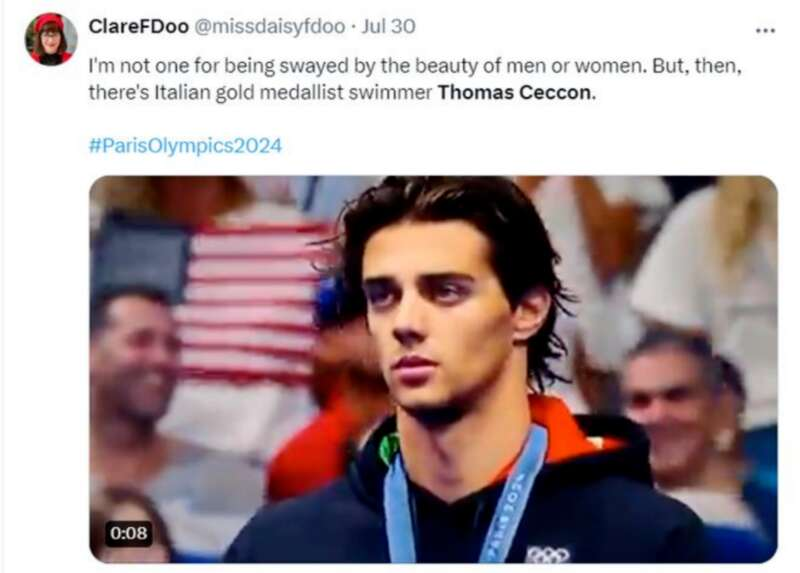
“多年后，终于发现了米开朗基罗创作的雕像本人。”
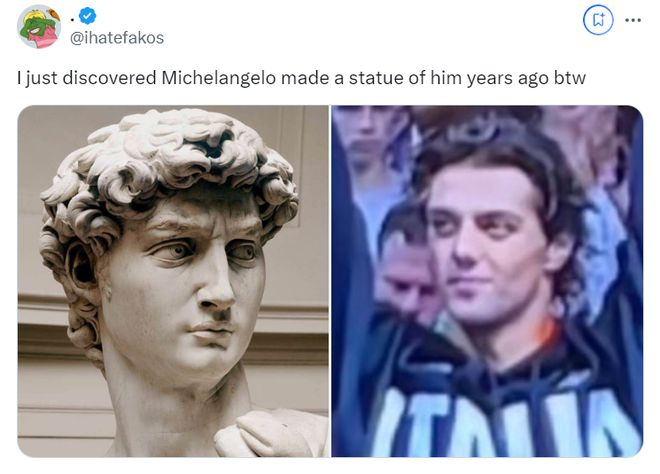
02
汤姆·戴利 & 诺亚·威廉姆斯
（Tom Daley & Noah Williams）
英国
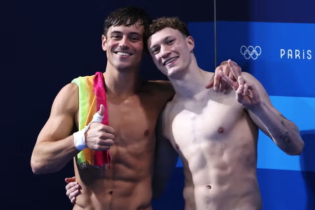
图源：Getty Images还记得那个在2008年北京奥运会上首次亮相的英国“跳水王子”汤姆·戴利吗？今年，他和搭档诺亚·威廉姆斯（Noah Williams）在巴黎奥运会双人10米跳台上夺得银牌，这也是戴利个人的第五枚奥运奖牌。
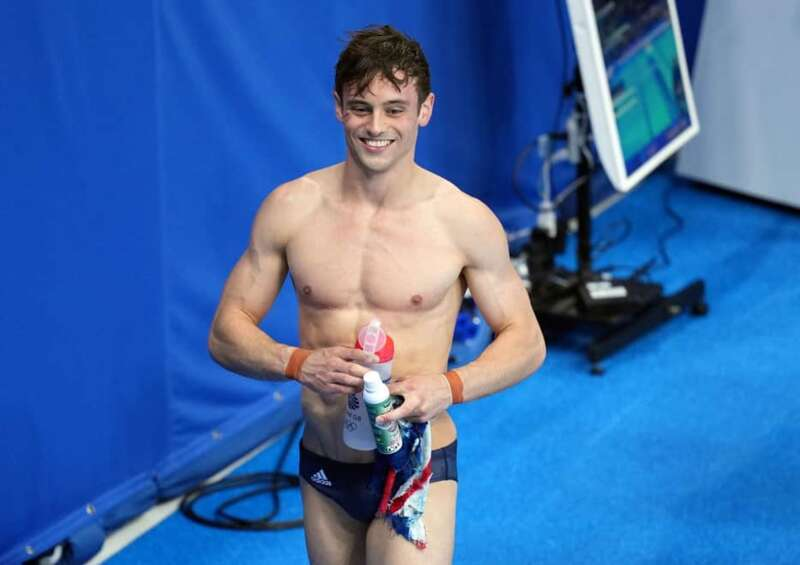
图源：PA Wire现年30岁的戴利虽然已经是一名“跳水老将”，但他在赛场下却依然保持着可爱的一面。
大家是否还记得他在上届东京奥运会的观众席织毛衣的场景？
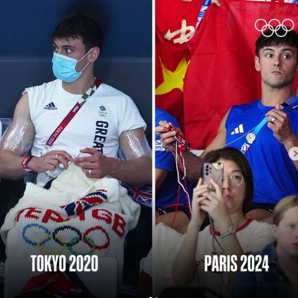
今年，戴利又在奥运现场织起了“奥运限量版”毛衣，甚至还在社交媒体上炫耀起自己的成果并隔空回应网友：“我会继续织下去！”
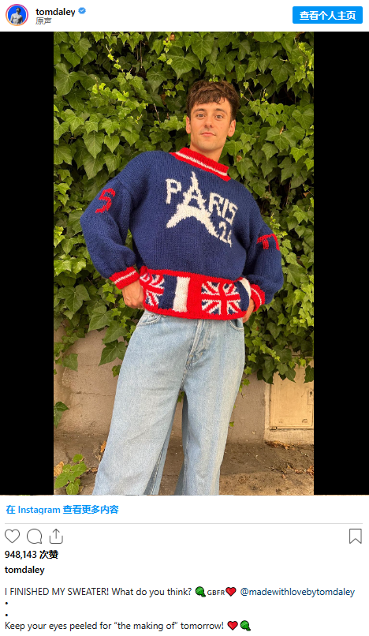
这位英国跳水王子会在巴黎奥运会期间织完几件毛衣？让我们无奖竞猜一下吧~
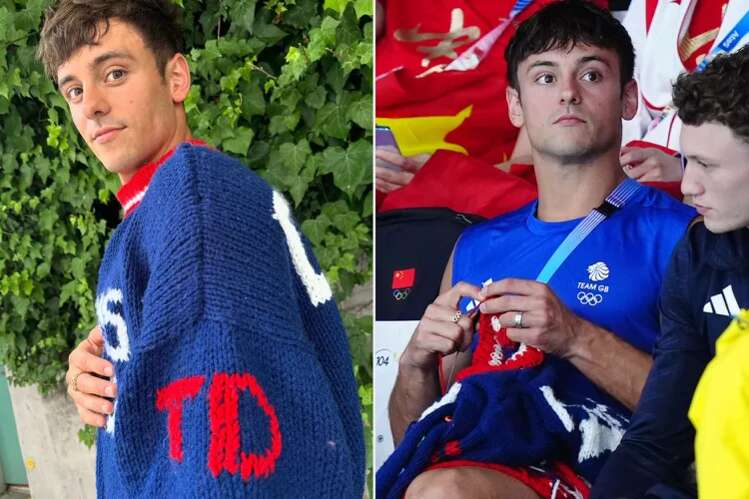
03
男子自由泳接力赛团队
美国
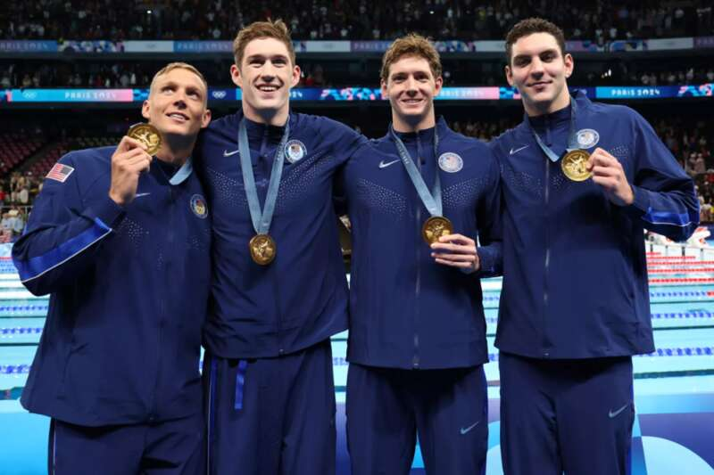
图源：Getty Images杰克·阿莱克西（Jack Alexy）、克里斯·朱利亚诺（Chris Guiliano）、亨特·阿姆斯特朗 （Hunter Armstrong）和卡勒布·德雷塞尔（Caeleb Dressel），这四名男子为美国队赢得了今年巴黎奥运会的首枚奥运金牌！
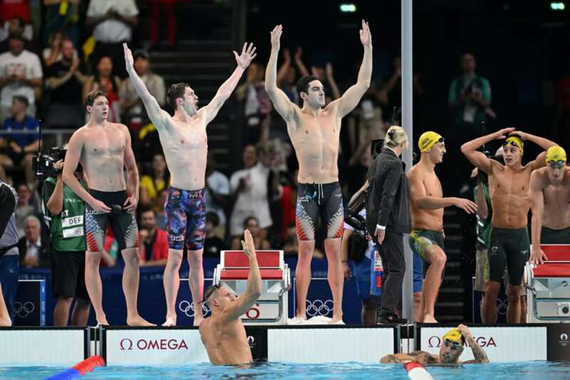
图源：Getty Images长腿细腰宽肩、人均身高1米9的配置，让不少现场观众直呼：吃得太好了！
04
莱昂·马尔尚（Léon Marchand）
法国
7月27日，来自法国的22岁“泳坛天才”莱昂·马尔尚在男子400米个人混合泳比赛中获得金牌，并以4分02秒95的成绩打破了“美国飞鱼”菲尔普斯保持的奥运会纪录。
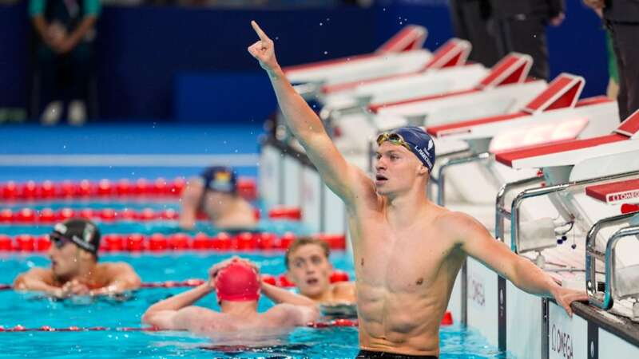
图源：AFP“梦想成真了！！感谢巴黎！”赛后，马尔尚通过社交媒体发表了“获奖感言”。
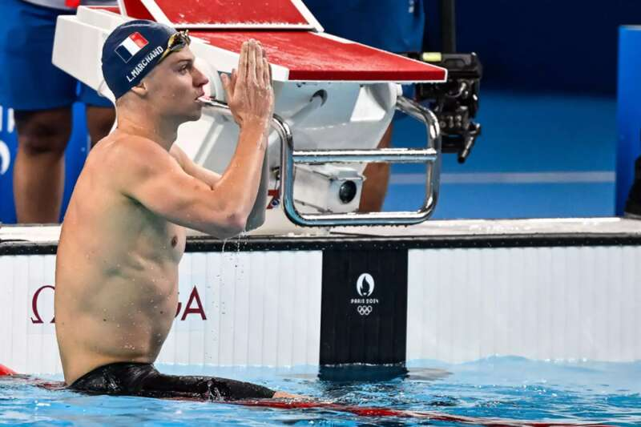
图源：Getty Images值得一提的是，马尔尚的父亲格扎维埃、母亲塞利娜及叔父克里斯托夫都曾是游泳选手，而且都参加过奥运会！
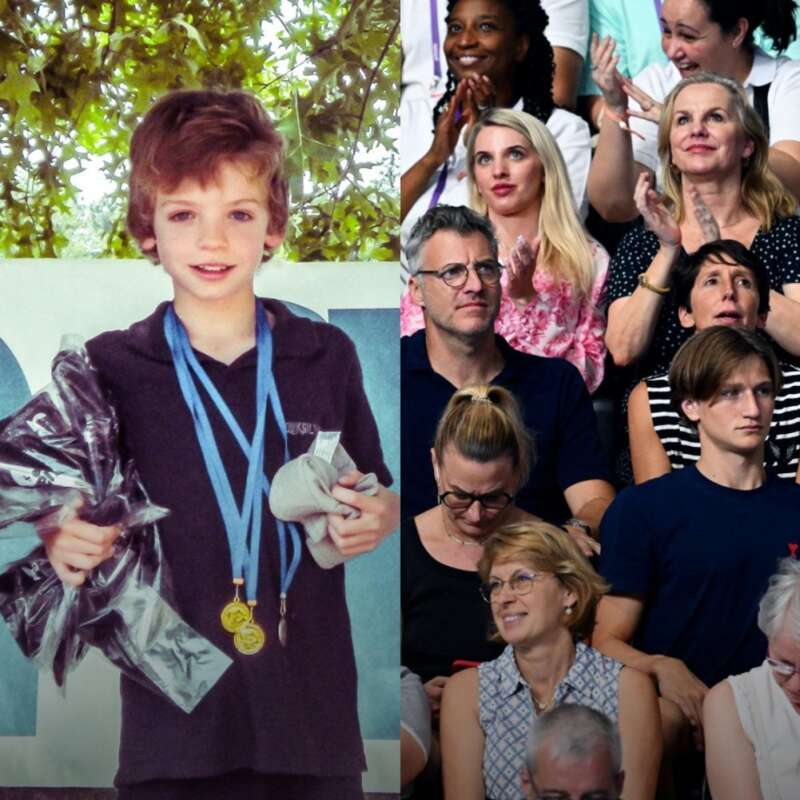
小时候的莱昂·马尔尚和他的家人。图源：F. Faugère
虽然来自“游泳世家”，但马尔尚最初接触的运动项目是橄榄球和柔道，后来决定跟随父母的脚步改练游泳。尽管马尔尚的父母一开始并不鼓励他从事游泳，但他最终还是坚持下来并获得了奥运金牌！
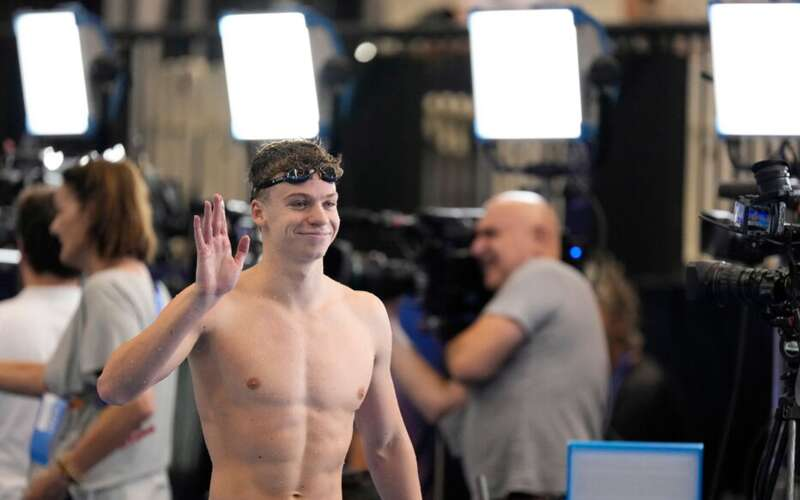
图源：MaxPPP05
徐嘉余
中国
“他的脸上带着甜美的笑容，顶着凌乱的头发，手里拿着崭新的奖牌”——这是《人物》杂志对中国游泳选手徐嘉余的评价。
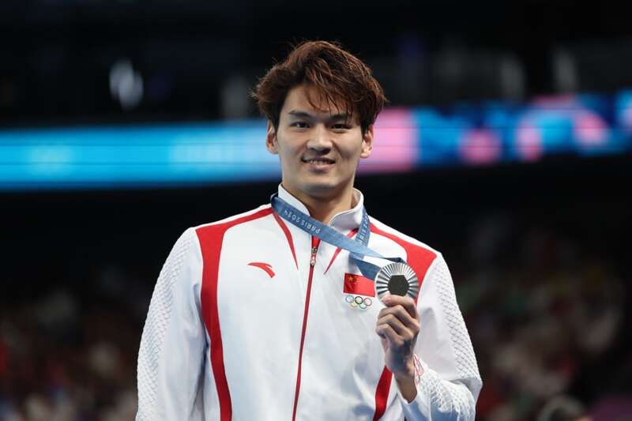
图源：中新社今年是徐嘉余第四次参加奥运会。作为一名“四朝元老”，他在7月29日的男子 100 米仰泳比赛中获得了职业生涯第三枚银牌。
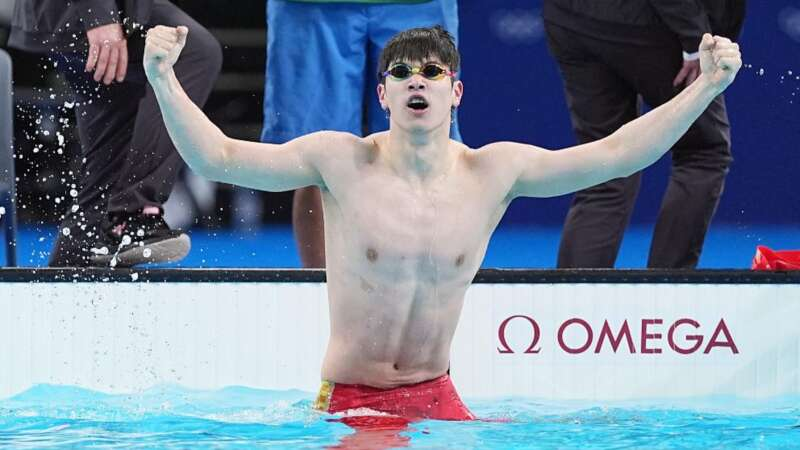
图源：新华社颁奖仪式结束后，徐嘉余在混采区与记者分享了自己奥运生涯三枚银牌的感受。
“虽然这一届（巴黎）奥运会只有三年准备时间，但是我在过去的三年时间里成长了太多。无论是更换教练的被迫成长，还是我个人方面，之前我生了一些病，也进行了小半年的长调。我觉得我是真正的重新回到了这个舞台，因为在2020年之后，我就再没有登上过个人赛的领奖台。今天的比赛证明我在世界仰泳的舞台上，还是有一席之地的。希望在接下来能有更好的发挥。”
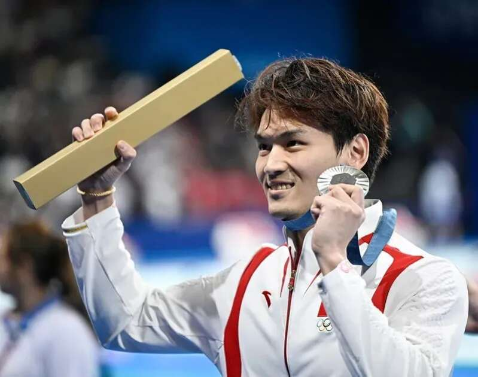
图源：新华社那么，还有哪位运动员给你留下了深刻的印象呢？大家心目中的“最佳选手”又是谁？欢迎在评论区大声说出他/她的名字！